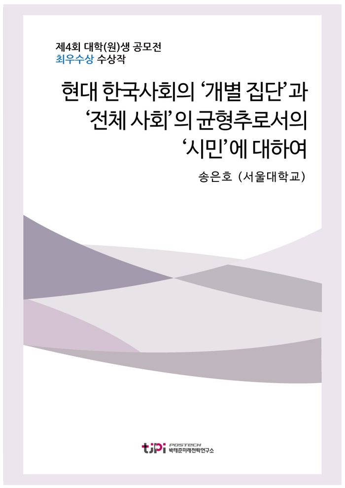

저자 송은호 (서울대학교)연재일 2017.08.01

요 약
[에세이 최우수상 수상작]
이 글은 물리학적 사유로 사회의 다양성, 시민의 주체성을 살펴본 이후, 현대한국사회는 ‘개별 집단’이 ‘전체 사회’ 사이의 균형을 맞추는 데 어렵다는 점을 도출한다. 이를 해결하기 위해 물리학에서 AOE를 통한 광학 문제를 해결한 데에서 착안하여, 사회의 각 집단을 매개하는 집단을 경험한 ‘시민’을 통해 해결할 수 있다고 주장한다. 이런 매개하는 집단을 통해 진정한 의미의 ‘현대 시민’을 양성하고 ‘성숙한 시민의식’을 구현할 수 있다고 보고 있다.
최우수상 발표 및 토론 영상 보기
<2017 에세이 공모주제>
- 우리나라 국민들의 시민의식 수준을 진단하고, 보다 성숙한 시민의식 함양을 위한 구체적인 방안을 제시하시오.
목 차
사회의 다양성, 자연 그 자체의 자연스러움에서
사회 구성원의 주체성, 작용과 반작용의 연속 속에서
사회를 움직이는 추진력, 모두 바라보는 사회 구성원 속에서
AOE, 보고자 하는 것에 맞춘다는 생각 속에서
한국사회의 AOE, 매개 커뮤니티가 필요할 때
나오며 – 사회의 각 집단과 사회 그 자체의 조화를 이루는 ‘시민’을 찾아서
내 용
[2017 청년 에세이 최우수상] 현대 한국사회의 ‘개별 집단’과 ‘전체 사회’의 균형추로서의 ‘시민’에 대하여
송은호 (서울대학교)
사회의 다양성
자연 그 자체의 자연스러움에서
우리는 질서가 있는 무엇인가가 질서를 잃어가는 과정을 ‘자연스럽게’
받아들였다
하지만 물리학자에게는 그런 자연스러움을 ‘그냥’ 받아들이는 것이야 말로 자연스럽지 않았다
그런 이유로 물리학자는 ‘그냥 내버려둔’ 어떤 상태가 특정 상태로 나아가는 과정에 관여하는 물리량을 찾으려고
노력하였고
그 노력의 소산이 바로 ‘엔트로피
(entropy)
’이다
엔트로피라는 개념을 정의하는 데에 있어서 가장 중요한 통찰은 우리가 흔히 쉽게 생각하는 자연스러움이라는 느낌을
‘경우의 수’라는 개념으로 정량화한 데에 있다
우리가 어떤 상태가 다른 상태에 비해서 자연스럽게 느끼는
것은
그 상태가 가지는 경우의 수가 많기 때문이다
쉬운 예를 들자면
위나
아래를 가리키는 열 개의 화살표들이 있다고 하자
만약 이들 화살표가 가려진 상태로 무작위로 위나 아래를
가진다고 할 때
몇 개의 화살표가 위를 가지는지 질문한다면 대다수 사람이
아니면
을 답하는 경우가 많다
대다수 사람은 열 개 중에서
4~6
개가 위의 방향을 가지는 것이 ‘자연스럽게’ 느끼기 때문이다
이런
‘느낌’은 경우의 수의 문제로 정당화 될 수 있는데
이들 화살표가 모두 위를 향하는 경우의 수는
가지 밖에 존재하지 않는다
반면
열 개 중에서 하나는 아래로 향한다는 가정을 넣는 순간
10
가지를 가지게 되고
위와 아래가 각각 다섯 개식 구성되면 무려
252
가지를 가지게 된다
우리가 ‘자연스럽게’ 느끼는 것은 이런 간단한 수학적 계산으로 정당화된다
자연스러움이 정당화되면 우리는 주변에 있는 모든 ‘질서 있는
것’에 대해 의문을 품을 수밖에 없다
단적으로 생명체는 대단히 정교한 체제
(system)
인데
이런 맥락에서 보면 이런 ‘질서 있는 체제’가
유지되는 것은 대단히 자연스럽지 않다
물리학자는 이런 ‘자연스럽지 않음’에는 분명한 원인이 있다고
보았고
그 원인으로 그 질서 있는 체제를 유지하기 위해서 끊임없이 에너지를 소비한다고 보았다
쉽게 생각하면 도서관의 서가가 잘 정돈된 것은 도서관이 그 정돈된 상태를 유지하기 위한 에너지를 계속 소비하기
때문
말하자면 사서들이 끊임없이 에너지를 소비하면서 정돈된 서가를 유지하기 때문이다
어떤 체제가 잘 정리되거나 정렬되었다면 거기에는 분명 이유가
있다는 것이다
자연과학에서 논의된 일련의 ‘자연스러움’에 대한 논의를 일반
사회에 적용해보자
모든 사람이 동일한 생각을 가지는 것에 비해서
서로
다른 생각을 가지는 것이 어쩌면 자연스러운 현상일지 모른다
‘생각’의 형성 과정이란 대단히 복잡한
과정이기 때문에 상대적으로 가까운 사람이 있을지는 모르지만
모두가 세세하게는 다른 생각을 가질 수밖에
없다
물론
과거 전체주의 사회와 같이 극단적인 사회가
존재했을지 모르지만
그런 사회가 만들어진 데에는 ‘생명체’에 대한 논의와 마찬가지로 원인이 있었고
그 원인은 개인의 자유에 대한 지나친 억압이었다
‘개인’의 가치가
존중받는 현대한국 사회는 전체주의 사회와 같이 모두가 동일한 생각을 가지는 것은 쉽지가 않다
사회 구성원의 주체성
작용과 반작용의 연속 속에서
앞서 자연과학에서의 ‘자연스러움’에 대한 논의를 통해서 사회
구성원이 모두 동일한 생각을 가지는 것은 쉽지 않다는 것을 알 수 있다
그럼에도 한국현대사를 살펴보면
대다수 국민이 동일하지는 않더라도
적어도 비슷한 생각을 가진 점이 있을 수 있다
대한민국이 실질적인 주권을 회복한 광복이래
민족국가로서의 대한민국의
발전을 도모하는 민족주의
자유주의 시장경제가 구현되는 자유민주주의
국가 구성원이 정치적 자유를 누리는 정치적 민주화 등의 생각은 상당수 국민이 공유해온 생각이다
그렇다면
물리학자가 그런 생명현상을 봤을 때
그 원인을 생각했던 것처럼 이런 사회 전반이 특정한 생각을 공유한
데에 대해서 그 이면의 이유를 생각해볼 수 있지 않을까
많은 물리현상은 특정 계
(system)
외력이 작용한 데에 대한 반작용으로서 나타나는 경우가 많다
이런 현상을 분석하는 데에 있어서도 이런
관점을 그대로 적용할 수 있는데
많은 사회 현상도 결국에는 어떤 특정 현상의 반동
反動
으로서 나타난 경우가 많기 때문이다
한국사회의 민족주의는 일제에 의한 국권침탈 과정에서 민족 개념이 유린당한 데에 대한 반발
자유민주주의는 근대화 과정에서 한국의 시장을 갖추지 못해서 원활한 경제활동이 안 되는 데에 대한 자각
정치적 민주화는 군부독재와 같은 과정에서 개인의 가치가 ‘실종’되었던 데에 대한 문제의식의 발로로서 각각 나타났다고
볼 수 있기 때문이다
한 사회에서 ‘자연스러움’을 넘어서 비슷한 생각을 공유한
데에는 대개 그 사회에 어떤 강력한 외력이 작용한 경우가 많다
앞서 살펴본 한국사회뿐만 아니라
다른 사회도 작용한 외력과 그 결과는 다르지만 그런 ‘작용
반작용’의
양상은 비슷하게 나타난다
예컨대
미국사회의 경우에는 여권신장운동
흑인인권운동
노예해방운동
반전운동
등은 그 내용은 다르지만
각각 성별
(gender),
인종
신분에 의한 차별에 대한 반발이나 국가가 국민을 전쟁에 동원하는 것에 대한 문제 제기에 의해 나타났다
혹자는 이런 ‘작용
반작용’에
대해서 부정적인 시각을 가질 수 있다
. 1
–1
을 더하면
이 되듯이
그런 사회 현상에 대한 작용에 대응하는 현상과
그에 대한 반작용에 대응하는 현상이 동시에 일어나면 결국 무위
無爲
불과하고
결국에는 그저 사회적 갈등 소모에 불과하다는 것이다
이런
생각은 대개 사회적 변화를 사회적 소모 행위로 간주하는데
잘 생각해보면 그 자체로 모순적인 부분이
있다
그들의 주장은 일견 물리학에서 보존력
(conservative
force)
에 대응되는 것으로 보인다
보존력에 의해서 물체가 아무리 움직여도 ‘제 자리’에만
돌아오면 어떤 일도 안 일어난 것이나 마찬가지라고 보는 것이다
과연 그럴까
‘갈등 소모’에 불과하다는 데에서 이미 보존력이 아님을 시사하고 있다
분명히 ‘갈등 소모’ 과정에서 사회는 어떤 에너지를 쓰고
있다
그런 의미에서 사실
–1
을 그대로 더하는 것이 아니라
각각의 절댓값을 더하는 것이라
보는 것이 좋을 것이다
, 1
의 절댓값
–1
의 절댓값
더해서
가 되는 과정이라는 것이다
물론
사회 현상에 대해서는 사회 구성원 각자가 가치를 바라보는 시각이 다르기 때문에 그 정도에 차이가 날 수 있을지
모르지만
분명하는 것은 작용과 반작용이 이루어진다고 해서 무위로 끝나는 것이 아니라
어떤 ‘무엇인가’를 만들어낸다는 것이다
가장 먼저 생각할 수 있는 것은 만약 그런 ‘반작용’이 성공을
한다면
그 자체로 그 ‘반작용’이 추구한 바가 이루어질 것이다
여권신장운동이
시작한다면 그 사회의 성별에 따른 차별이 상당 부분 완화될 것이다
하지만 그런 차별의 해소 이전에
여권신장운동이라는 운동 자체의 효과를 간과해서는 안 될 것이다
사회운동에는 그 운동의 가장 앞에 서는
사람도 있고
뒤늦게 동조하는 사람도 있지만
분명한 것은
분명 그 운동에 있어서의 ‘주체’가 되는 자가 반드시 존재하게 된다는 것이다
사회의 객체에서 주체가
된다는 것은 대단히 중요한 바인데
남성의 객체로서의 여성과 여성 그 자체로서의 주체는 다르기 때문이다
어쩌면 그런 사회운동에서 그 결과로서 얻어지는 바도 중요하지만
과정에서 객체였던 누군가가 비로소 주체가 되는 부분의 의미는 크다고 할 수 있다
사회를 움직이는 추진력
모두 바라보는 사회 구성원 속에서
어떤 공간에 아주 다양한 방향으로 힘이 존재한다면
그 힘은 존재하지 않는 것이나 마찬가지일 것이다
힘과 같이 벡터
(vector)
로 표현되는 양은 그 값을 더해서
이 된다면 없는 것이나
마찬가지가 될 것이기 때문이다
마찬가지로
어떤 사회에서
사회 구성원이 ‘객체’로서 존재하고 그 힘이 무작위로 존재한다면 존재하지 않는 것이나 마찬가지겠지만
만약
어떤 이유에서 각 사회 구성원이 특정 방향으로 적절히 나열
(align)
이 된다면 말이 달라진다
어떤 공간의 모든 벡터가 동일한 방향으로 향하면 아주 큰 크기를 가지는 벡터가 되듯이
어떤 사회에서도 모두가 동일한 목표를 가지면 목표를 향한 큰 힘이 된다
이와 같이
한 사회가 동일한 목표를 가지면 그렇지 않은 사회에 비해서 목표를 더 잘 달성할
개연성이 생기는데
일례로 박정권 체제 아래에서 나온 연설물과 출판물을 분석한 전재호
(2009)
에 따르면
국가비상사태를 선포한 이후의 시기
(1972~1979)
를 국민총화
國民總和
기로 명명하고
국가주의
군사주의
반공 이데올로기가 담긴 정책을 실현하기 위해서 민족주의 담론으로서 이 시기에 꾸준히 제시하였다고 한다
일례로
당시 정권에서 정면으로 내세운 ‘우리는 민족중흥의 역사적
사명을 띠고 이 땅에 태어났다
’로 시작하는 국민교육헌장은 모든 국민이 ‘민족중흥’을 위한 밀알이 될
것을 주장한 텍스트였다
허은
(2010)
은 이에 대해서
당시 학자들은 ‘물질적 근대화’만큼이나 ‘정신적 근대화’가 중요하다고 보았고
양자를 포괄하는 종합적인 국가발전상을 제시하기 위해서 꾸준히 ‘정신적 근대화’를 강조하였다고 보았다
이런 당시 정권 차원의 움직임은 상당한 효과를 이루었는데
전후 최빈국에서 벗어나지 못했던 대한민국이 지금의 ‘대한민국’으로 발전한 데에는 시각에 따라 정도는 다르지만
당시 박정희 정권의 정책이 유효했던 것은 사실이다
이런 발전은 빌 게이츠 빌
멜란다 게이츠재단이 “한국은 많은 원조를 받는 나라에서 상당한 원조를 주는 나라로 변신한 유일한 예로
내가 자주 소개한다
”라는 말
최현묵
(2011.11.05)]
에서 알 수 있듯
한국의 경제 발전은 기적이자
모범 사례로 언급되고 있다
하지만 이 기적의 이면에는 모든 국민을 동일한 목표에 동참하게 하는 정치적
수사가 있었기에 가능하였다
하지만 소위 ‘총화
總和
’라 불리는 통합을 이끌어내는 정치적 수사도 일정 부분 한계가 있을 수밖에 없다
단적인 예로 한국의 사례와 같이 모든 국민이 만들어진 힘이 ‘발전’이라는 방향으로 갔다면 문제가 없지만
만약 이 힘이 적절하지 않는 방향으로 간다면 돌이키기 힘든 오류에 빠질 수 있다
차 세계대전 당시 나치 독일의 사례나
군국주의 일본의 사례는 모든 국민이 동일한 생각을 가지고
그 생각이
적절하지 않는 경우에 어떤 부작용이 나타나는지 잘 보여주는 사례라고 볼 수 있다
이런 오류가능성을 치하하더라도 자발적인 ‘총화’가 아니라 타의에 의한 ‘총화’를 강요하는 과정에서
‘전체’의 가치가 ‘개인’의 가치를 누르게 되는 상황도 적절하다고 볼 수 없다
현대사회가 민주주의를 추구한다는 점에서 볼 때
개인의 가치는 존중
받아 마땅하다
박정희 정권 시절의 조국근대화 과정에서 나타난 작용과 반작용
과정에서 한국사회에서는 ‘근대적 국민’이 탄생하였고
그에 맞는 국민의식이 신장된 것은 사실이다
분명
왕조사회에 일부 계층에 한정된 ‘교육’에 대한 관심은
근대사회에서는 모든 계층으로 확대되었고
국가 발전을 견인하였다
역설적으로 봉건시대 잔재를 타파하기 위한 반작용으로서의 조국근대화
담론은
이후 다른 담론에 대한 ‘작용’으로서
정치적 민주화
운동이라는 또 다른 ‘반작용’을 불러일으켰다
이런 근대화 과정에서 올라간 교육수준은 단순한 지식의
양적 증대에 머무르지 않고
그 전에 한반도에 존재하지 않던
어떤
의미에서 ‘근대적 시민’을 만드는 기작으로서 작동하였다
AOE,
보고자 하는 것에 맞춘다는 생각 속에서
박정희 정권의 조국근대화 정책이 양면성을 가지고 있음에도
불구하고
그 과정에 새로운 ‘근대적 시민’을 만들었다는 논의는 ‘성숙한 시민의식’을 찾는 고민을 하는
자를 우울하게 한다
왜냐하면 새로운 시민의식은 그 사회 전반의 문제의식에 기인하는데
민주주의 사회에서는 그런 거대담론으로서 전체 국민을 묶는 것은 쉽지 않기 때문이다
물론
동일본대지진이 세계인에게 ‘원자력’이라는 에너지 담론에 대해서
다시 한 번 생각하게 하는 계기를 만드는 등의 사례가 있다
하지만
이 경우는 대개 상당한 비극
(tragedy)
에 기반 하거나
다원화된
현대 사회의 한 측면
(aspect)
만 바라보게 하는 한계가 분명히 존재한다
역설적이게도 현대 한국사회는 지금까지 걸어온 한국사회가 발전해
온 덕분에
더 이상 구조적으로 ‘쉽게 묶이지 않는’ 국민이 구성하는 사회가 되었기 때문이다
그렇다면 더 이상 한국사회에서는 시민의식을 발전시킬 수 없는가
하지만
이런 절망적인 질문에 대한 대답은 광학
(optics)
을 연구하는 물리학자로부터 실마리를 얻을 수 있다
광학에서 중요한 주제 중에서는 렌즈나 거울과 같은 광학기기를 이용해서 관찰하는 물체의 상이 특정 표면에 맺히도록
하는 문제이다
이런 문제를 해결하는 데에 중요한 것은 광학기기를 어떻게 배치할 것인지를 정량적으로
설계하는 문제이다
이 과정은 대개 광학기기나 물체를 그에 대응하는 적절한 행렬에 대응하고
그렇게 대응시킨 행렬을 정량적으로 계산하는 것을 통해서 설계하게 된다
이런 방법은 비교적 단순한 물체에 대해서는 성공적이었고
이런 정량화 시키는 방안은 광학 발전에서 유효하게 작용하였다
하지만
일상에서 마주하는 대부분의 물질은 대단히 복잡한 형태라서
그에 맞는 적절한 행렬을 구성하기 어렵다는
점이다
그런 이유에서 당시 수학적으로 충분히 표현한 물체에 대해서만 충분한 광학적 해석이 가능하였다
하지만 최근 의료 환경에서 이용하는 생체 분자의 영상화 과정에서는 이러한 문제가 반드시 해결되어야 하는 문제였다
최근에 이러한 문제에 대한 실마리는 다양한 방식으로 시도가
되고 있는데
그 중 한 가지 접근은 다듬어진
(shaped)
파동을
입사하는 방안이다
과거에는 단순한 형태의 평면파
(plane
wave)
를 넣었었는데
그러지 말고 입사하는 빛 자체를 다듬어서 이용하자는 전략이다
평면파를 넣고 그 빛의 초점이 맞는 것을 기대하지 말고
애초에
‘초점이 맞도록 다듬어진’ 빛을 이용하자는 것이다
하지만 이 방법이 이루기 위해서는 빛을 다듬기 위한
상당량의 계산을 해야 하는 데에 있는데
최근 여러 가지 기계학습
(machine
learning)
이나 연산기술 발달로 이 부분이 극복할 수 있는 범주에 들어섰다
광학에서 이런 일련의 문제해결 방안은 보상광학
적응광학
, adaptive optics)
의 영역에 속하게 되는데
이런 접근 방식은 우리에게 ‘동일한 형태의 입력이 필수적인가
’라는
근본적인 질문을 남긴다
그 질문에 대한 대답으로 물질의 각 부위마다 ‘그에 맞게’ 다르게 작용하도록
빛을 다듬는 것은 어떤가라는 해결책을 내놓았다
그리고 ‘그에 맞게’ 다듬는 데에 필요한 장치인
AOE(
보상광학 요소
, Adaptive Optical Element)
찾는 것이다
그렇다면 실제 한국사회에는 광학에서 찾은
AOE
존재하지 않는가
한국사회의
AOE
를 찾아서
이런 관점에서 본다면 놀랍게도 한국사회에는 이미 그에 맞는
AOE
가 등장하고 있다
바로 정보화 과정에서 나타난 정보통신
기술이다
현대 한국사회에서는 더 이상 국가에서 제시하는 단일한 평면파를 거부하고
, AOE
로서의 인터넷 커뮤니티에 다듬어진
자신에게 맞는 빛을 능동적으로
찾아가고 있다
그런 정보통신 기술 중에 대표적인 것은 바로 인터넷 커뮤니티인데
인터넷 커뮤니티는 단순히 일부 개인의 동호회의 기능을 하는 것으로 여겨졌다
하지만 강원택
(2002)
은 인터넷 커뮤니티였던 ‘노사모
노무현을
사랑하는 사람들의 모임
’에 주목하였는데
당시
16
대 대선에서 노사모는 더 이상 단순한 동호회를 넘어서 현실정치에 적극적으로 변화시키는 주체로서 작용하였다
과거 한국사회에서 소홀하게 다루어진 기업 피해자 문제나 젠더
문제 등도 다양한 인터넷 커뮤니티 등을 통해서 해결하는 양상이 나타난다
인터넷 커뮤니티가 한국사회에서 이런 기능을 할 수 있는 것은
시공간적 한계를 넘어서게 해주었기 때문이다
소수자 문제의 경우에는
상대적으로 공간에 있어서 분산되어 있고
또 문제의 민감성으로 인해서 오프라인에서 서로를 인지하는 것이
어려웠기 때문이다
하지만 인터넷 커뮤니티에서는 그런 공간의 문제는 물론
어느 정도 정보의 제한을 통해서 외부에 노출되지 않은 상태에서 인지를 하는 것도 가능하게 되었다
이런 과정에서 과거에는 산발적으로 존재해서 그 존재가 희미했던
문제가
, AOE
로서의 인터넷 커뮤니티는 그 문제의 초점을 맞추고 있다
가령
가습기 살균제 문제만 하더라도 현재 밝혀진 사망자만
1,000
여 명인데
한국 인구로 생각해보면
50
만 명 중에서 한 명이다
만약 인터넷 기술이 없었다면
50
만 명 중에서 살균제 피해자를 찾는 것은 대단히 어려운 문제였고
그런
이유에서 사회 이슈화가 되지 않았을지 모른다
하지만 그
1,000
명이
모인다면 결코 사회에서 간과할 수 없는 사회문제로 대두되기 때문이다
어쩌면 한국사회에서는 이미
AOE
로서의 인터넷 커뮤니티 기술이 보편화된 사회일지 모른다
가장
먼저 제시한 자연세계의 ‘자연스러움’에 의해서 한국사회는 다양화되고 있으며
그 다양화된 사회에서 각자에
주어진 ‘작용
반작용’ 과정을 통하는 과정은 자신의 ‘정체성’을 찾아 나서고 있는 여정이라고 볼 수
있다
그리고 그 정체성은 과거 국가에 의해 부여된 정체성이 아니라
각자 자신에게 맞는 정체성을 스스로 찾아가는 과정이라고 볼 수 있다
하지만 이런 인터넷
커뮤니티에 의해서 자신의 정체성을 찾아가는 과정에는 문제점이 없을까
가장 큰 문제점은 사회에서 찾은
AOE
는 사회 전체를 비추지 않고 일부만 비추는 경우도 있고
왜곡된
모습을 비추는 경우도 있기 때문이다
인터넷 커뮤니티는 과거에 비해서 정치적 다양성이나 사회 담론의
다양성을 증진한 데에는 이견이 없지만
그 중에는 문제의 본질을 흐리거나 왜곡하는 경우가 있기 때문이다
한희정
(2016)
은 최근 한국의 사이버공간은 정제되지 않은 언어와
혐오 표현이 여과 없이 이용되고 있으며
이른바 ‘일베’나 ‘소라넷’과 같은 사이트에서는 젠더
이주민
성소수자에 대한 혐오 표현이나 반인간적 범죄자에 대한 옹호와
미화가 아무렇지도 않게 유통되고 있다고 지적하였다
이런 일군의 우리 사회의
AOE
가 사회적으로 밝혀져야 할 사실뿐만 아니라
사회적으로 지양되어야
할 사실까지도 여과없이 상을 맺게 하기 때문이다
이와 같이
부분적으로
사회의 모습을 비주거나
왜곡된 모습을 비추는 것은 평등주의나 사회권 인식
그리고 공동체적 연대감을 약화시키는 것으로 작용기 때문이다
최현
(2006)
에 따르면 이런 가치는 사회시민적 시민권을 확대할 수 있는 요건으로 작용
[Fraser(1998),
재인용
하기 때문이다
최현
(2006)
은 이에 대해서
IMF
경제 위기 상황에서의 사회 안전망의 없었던 점
국가주의 해체 과정에서 공동체 이념을 정립하지
못한 점을 지적하고 있지만
최근 앞서 제시한 극단적인 커뮤니티에 의한 공동체적 연대감이 약해지고 있다고
생각할 수 있다
분명 인터넷 커뮤니티는 비슷한 가치를 공유하는 개인을 모이게
해서 집단
(cluster)
을 만들지만
그 집단 사이의 연결
고리가 없다면 한 사회를 여러 집단으로 나누는 효과를 낳게 된다
일부 극단 성향의 여성 커뮤니티는 과거 젠더 문제의 소수자였던 개별 여성을 모이게 함에 따라서 개별 여성 수준에서 공론화하지 못했던
다양한 문제를 제기하고 해결하는 데에 일조하였지만
일부 문제에서는 커뮤니티가 ‘여성
여성’ 구도가 강화됨에
따라서 또 다른 갈등을 야기하는 경우도 존재한다
이런 ‘개별 가치의 연대성’이 ‘사회 전반의 연대성’을 압도하는
상황은 시민의식을 약화하는 경우 두 가지 문제점이 야기가 될 수 있다
한 사회 안에서 특정 생각을
가진 사람이 모이는 과정에서 적절하지 못한 방향으로 구성원의 생각이 정렬이 되고
이 과정에서도 강력한
힘이 만들어지는데 그 힘이 적절하지 않은 목적으로 쓰일 수 있는 부분이다
한편
개별 가치의 연대성이 지나치게 강조하게 되면 사회 전반에 통용되는 ‘보편적 시민’이 아니라 각 집단 안에서만
통용되는 ‘나누어진 시민’이 만들어질 것이다
한국사회의
AOE,
매개 커뮤니티가 필요할 때
한국사회 구성원은 각자에게 맞는 다양한 인터넷 커뮤니티를
찾고
그 과정에서 기존에 사회에서 공론화되지 못한 문제가 본격적으로 공론화되었다
하지만 그 과정에서 ‘개별 가치의 연대성’이 ‘사회 전반의 연대성’을 보지 못하는 문제가 있다는 부분이 있었다
이 문제도 물리학적인 관점에서 본다면
결국 보고자 하는 대상의
전체 이미지는 가지지 못하고
그 대상의 일부분의 나누어진 여러 이미지밖에 가지지 못한 상황으로 볼
수 있다
어쩌면 한국사회에 필요한 것은 이렇게 나누어진 여러 이미지를
하나로 묶는 과정이 필요한 것이다
굳이 물리학적인 문제로 생각하지 않더라도
동일한 대상의 각 부분을 찍은 사진을 한 데 모으기 위해서는 각 사진에 겹치는 부분이 있어야 할 것이다
그래야 그 겹치는 부분을 실마리로 삼아서 두 사진을 이을 수 있을 것이기 때문이다
한국 사회도 ‘개별 가치의 연대성’과 ‘사회 전반의 연대성’의 균형을 맞추기 위해서라도
‘겹치는 부분’을 만들어야 할 것이다
겹치는 부분
사회를
구성하는 각각의 집단을 매개하는 집단이 필요하다는 것이다
하지만 이 매개 집단을 만드는 것은 쉬운
문제가 아닌 것으로 보인다
가령
세대 갈등이 심하다고
해서
공적 영역에서 인위적으로 ‘청년세대 커뮤니티’와 ‘노년세대 커뮤니티’를 잇는 ‘세대교차 커뮤니티’를
만드는 식의 접근은 애초에 그런 커뮤니티를 만드는 것도 어렵거니와 설령 만든다고 해서 그런 커뮤니티의 호응이 제한적일 수밖에 없다
오히려 나누어진 집단을 인위적으로 잇는 이른바 ‘매개 커뮤니티’를
생각하기보다
다양한 가치관을 가진 사람을 자연스럽게 흡수하는 토론의 장을 만드는 것이 좋을 것이다
이전에 지역 정보화도서관에서 ‘문고책 읽기’ 프로그램이 있었는데
프로그램은 소위 ‘문고책’으로 출판되는 다양한 저서에 대해서 지역 저명인사를 중심으로 토론을 진행하는 모임이었다
이런 공개적인 모임의 경우에는 세대
성별
학벌
등에 상관없이 다양한 집단의 사람들이 모여서 토론하기 때문에 평소 일상생활에서 만나지 않는 다양한 집단의 사람들이 의견을 주고받게 된다
독서모임이 사소해 보일 수 있지만
특정 사회에 존재할 수밖에 없는 다양한 균열에 상관없이 다양한 사람이 다양한 의견을 주고받는 것은 ‘개별 가치의
연대성’과 ‘사회 전반의 연대성’ 사이의 균형을 맞추기 때문이다
어떤 집단의 극단성이란 그 집단의
구성원이 지나치기 단일한 생각을 가져서 비판이 가해지지 않아서 생기는데
만약 앞서 제시한 ‘매개 커뮤니티’를
경험한 사람들에 의해 자성의 목소리가 나타날 수 있다
어쩌면 이런 매개 커뮤니티를 경험한 사람들은 ‘때로는 방화범의
역할
때로는 소방수의 역할’을 하는 역할을 할 것으로 기대된다
‘개별
가치의 연대성’이 강조된 집단에서 간과하는 담론에 불을 붙이는 방화범의 역할과 해당 커뮤니티 안에서 해결 안 되는 문제를 해결하는 소방수의 역할을
모두 해야 하기 때문이다
혹자는 최근 극단화되는 커뮤니티가 ‘매개 커뮤니티’ 정도로 해결될 것인지
반문할지도 모른다
물론
극단화되는
커뮤니티에 대해서 이런 ‘매개 커뮤니티’를 경험한 사람들로 모두가 해결이 안 될 것이고
일부 위법
행위에 대해서는 엄중한 법의 심판도 이어져야 할 것이다
하지만 앞서 살펴본 바와 같이 어디까지나 ‘사적인
영역’에 속하는 각각의 커뮤니티에서 공적 권력이 개입할 여지는 대단히 제한적이고
공적 권력은 어디까지나
‘방화범이자 소방수’를 양성해서 커뮤니티의 극단화를 막을 수밖에 없다
한편
그렇다면
그런 ‘방화범이자 소방수’를 양성하는 것에 대한 현실성에 대한 질문이 남을 것이다
하지만 앞서 살펴본
바와 같이 공공 도서관 등에서 ‘토론의 장’을 마련하는 것을 통해 충분히 가능한 영역이다
공공 영역에서도
이미 이루어지고
이룰 수 있는 영역이 많은데
앞서 살펴본
사례와 같이 전국의 공공 도서관에서 다양한 토론 프로그램을 운영한다든가
지역 거점 대학을 중심으로
다양한 토론 프로그램을 개발할 수 있다
나오며
사회의 각 집단과 사회 그 자체의 조화를 이루는 ‘시민’을
찾아서
‘시민의식’이라고 하면 과거 권위주의 사회의 ‘조국근대화의
밀알’로서의 시민이라든가
도덕재무장 운동의 성과로서의 시민을 쉽게 떠올린다
사실 그런 연상이 자연스러운 것은 이 글에서 제시하였듯
분명 어떤
때에는 분명 ‘시민’이란 어떤 거대 담론에 대한 작용과 반작용의 소산으로서 만들어졌기 때문이다
하지만
한국사회는 자연스럽게 몇 개의 거대담론에 의해 정해지는 것이 아니라
아주 다양한 생각을 가진 집단에
의해 결정된다
특히
과거에
초점을 맞추지 못하던 상을
AOE
가 상을 맺게 하듯이
정보화는
한국 사회의 그런 다양한 생각을 인터넷 커뮤니티로서 체화를 하였고
그런 다양한 생각이 다양한 집단으로의
체화 과정은 분명 긍정적인 결과를 내놓았다
하지만 일부 극단적인 커뮤니티는 한국 사회에 여러 가지
우려를 자아내게 한 것 또한 사실이다
물론 그런 다양성의 부작용으로 말미암아 다양성을 저해하는 조치를
취할 수도 있고
문제가 띠는 집단에 대한 대대적인 규제를 할 수 있다
하지만 전자는 다양성이 커지는 자연적인 흐름에 역행하는 처사이고
후자는 공적 권한이 인위적으로 사회의 다양성을 재단할 수 있다
특히
공적 권한의 인위적인 재단의 부작용은 최근 한국 사회를 뒤흔든 국정농단 사태에서 잘 볼 수 있는 사례였다
그런 의미에서 ‘사회의 각 집단’과 ‘사회 그 자체’의 균형은 각 집단의 위법행위에 대한 사법적 판단이라는
강경책과 매개 커뮤니티를 통한 ‘방화범이자 소방수’를 통한 집단의 극단화를 완화하는 방향으로 진행해야 할 것이다
이런 조치를 통해 ‘사회의 각 집단’과 ‘사회 그 자체’ 사이의 적절한 균형이 이루어질 때
비로소
한국사회는 진정한 의미의 ‘현대 시민’의 ‘성숙한 시민의식’이 만들어질 것이다
참고문헌
논문
1.
강원택
(2002).
『세대
이념과 노무현 현상』
사상
2.
전재호
(1999).
『박정희 체제의 민족주의』
한국정치학보
3.
최현
(2006).
『한국 시티즌쉽
(citizenship)
민주주의와 인권
4.
한희정
(2016).
『이주여성에 대한 혐오 감정 연구』
한국언론정보학보
5.
허은
(2010).
『박정희정권하 사회개발 전략과 쟁점』
한국사학보
6. Fraser, Nancy, and Linda
Gordon(1998).
Contract Versus Charity: Why Is There No Social
Citizenship in the United States?" in The Citizenship Debates: A Reader.
edited by G. Shafir. Minneapolis:
, University of
Minnesota Press
6. Vellekoop, Ivo M., and A. P.
Mosk(2007).
Focusing coherent light through opaque strongly
scattering media.
, Optics letters
일간지
1.
최현묵
(2011.11.05).
“한국
원조 받다 원조 주는 나라로 변한
모범사례”
조선일보